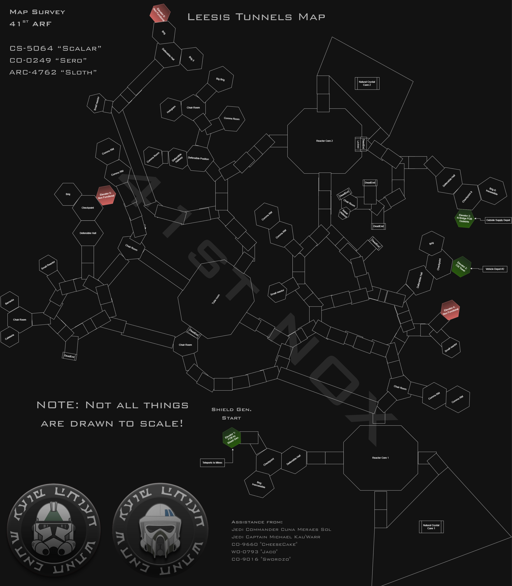
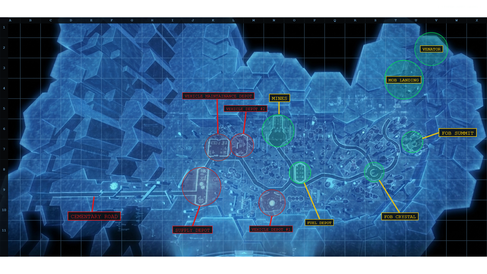
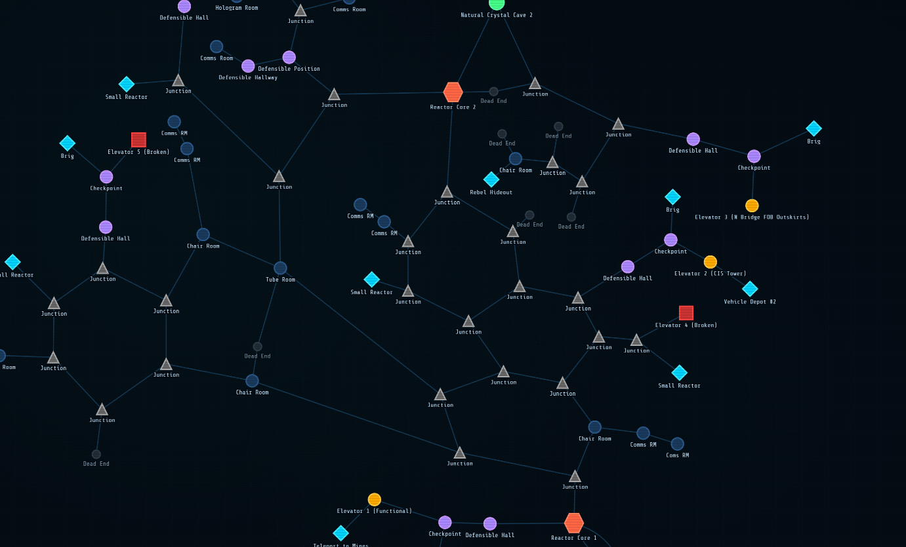
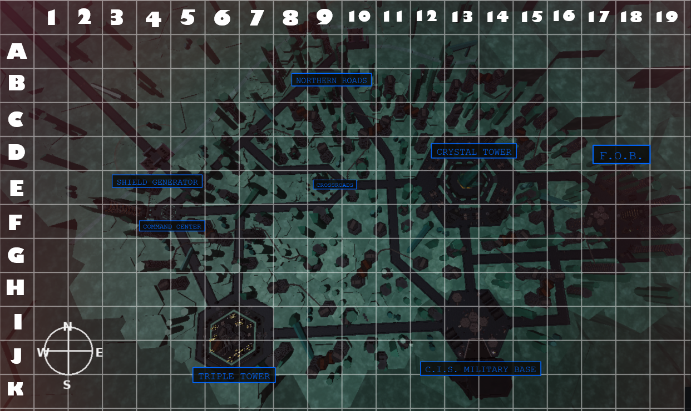

OUTER RIM
SECTOR 10
ACTIVE COMBAT ZONE
SURVEY CS-5064
CHRISTOPHSIS
41ST ARF Map Survey · Cartographers: CS-5064 "Scalar", CO-0249 "Sero", ARC-4762 "Sloth"
Region
Outer Rim
Sector
10
Status
CONTESTED
// SELECT MAP VIEW //

LEESIS TUNNEL MAP
Full subsurface tunnel network survey. Includes reactor cores,
defensible positions, checkpoints, and dead ends.
Surveyors: CS-5064, CO-0249, ARC-4762.
OPEN MAP →

LEESIS SURFACE MAP
Surface-level tactical overlay. Crystal formations,
urban grid, and approach vectors.
OPEN MAP →

LEESIS GRAPH VIEW
Interactive network graph of tunnel topology.
Click nodes to inspect connections. Highlight
routes between key locations.
OPEN GRAPH →

TOPHEN SURFACE MAP
Surface-level tactical overlay. Crystal formations,
urban grid, and approach vectors.
OPEN MAP →
SURVEY NOTES
Survey conducted by 41ST ARF. Assistance from: CO-9660 "CheeseCake" and WO-0793 "Jaco".
Additional contributors: Jedi Commander Cuna Meraes Sol · Jedi Captain Michael KauWarr · CO-9016 "Swordzo"
⚠ NOTE: Not all things are drawn to scale.
Elevators B and 4 are currently NON-FUNCTIONAL. Elevator 2 provides bridge FOB access to outside. Elevator 1 connects to Mine network via teleport.